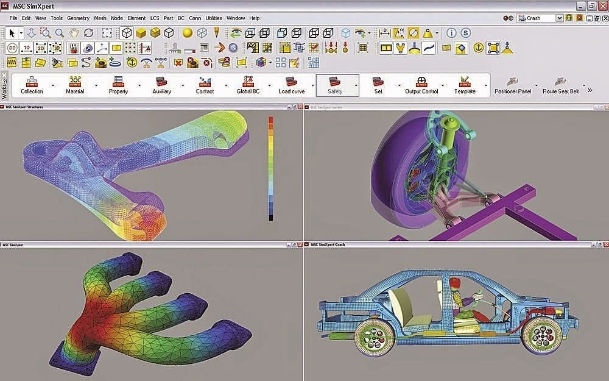

Unidad 1 Introducción
1.1. Concepto de simulación y tipos de simulación
La simulación es una técnica que consiste en imitar o reproducir el comportamiento o características de un sistema real
utilizando un modelo simplificado del mismo.
En otras palabras, es una representación computarizada o abstracta de un sistema, que permite estudiar su comportamiento
y realizar experimentos virtuales sin la necesidad de interactuar directamente con el sistema real.
La simulación se utiliza en una amplia gama de áreas, incluyendo ciencias naturales, ingeniería, negocios, medicina,
ciencias sociales y muchos otros campos. Proporciona una forma segura y controlada de explorar diferentes escenarios,
probar hipótesis, optimizar procesos y tomar decisiones informadas.
Palabras clave: representación abstracta de algo real, la cual nos permite la experimentación.
Tipos de simulación
- Simulación física: Se utiliza para modelar y simular el comportamiento de sistemas físicos reales, como el movimiento de objetos, el flujo de fluidos, las reacciones químicas, entre otros. Se basa en principios y leyes físicas para calcular y predecir el comportamiento del sistema.
- Simulación de eventos discretos: Este tipo de simulación se utiliza para modelar sistemas donde los eventos ocurren en momentos discretos y no continuos. Se representan los eventos relevantes y las interacciones entre ellos a medida que ocurren en el tiempo. Ejemplos de aplicaciones son la simulación de colas en sistemas de atención al cliente, el flujo de tráfico en una red de transporte, o el comportamiento de una cadena de suministro.
- Simulación basada en agentes: En este enfoque, los sistemas se modelan mediante la interacción de múltiples agentes individuales, cada uno con su propio comportamiento y reglas. Los agentes pueden representar personas, animales, máquinas o cualquier entidad con capacidad de toma de decisiones y comportamiento autónomo. Este tipo de simulación es útil para estudiar fenómenos sociales, como la propagación de enfermedades, el comportamiento de mercado o la simulación de sistemas ecológicos.
- Simulación Monte Carlo: Es una técnica que utiliza la generación aleatoria de números para simular sistemas y obtener resultados estadísticos. Se basa en realizar múltiples iteraciones de un modelo utilizando valores aleatorios para las variables de entrada, lo que permite evaluar la incertidumbre y calcular distribuciones de probabilidad. Se utiliza ampliamente en finanzas, física, ingeniería y otras disciplinas.
Cada tipo de simulación tiene sus propias características y se utiliza en diferentes contextos según las necesidades y
objetivos del estudio.
Palabras clave: la simulación física es modelar cosas reales; la simulación de
eventos discretos consiste en modelar aquellos sistemas que tienen eventos
extraordinarios; la simulación basada en agentes es aquella donde se tienen variables
con comportamiento propio; la simulación de Monte Carlo se basa en modelar distintos escenarios
de manera aleatoria.